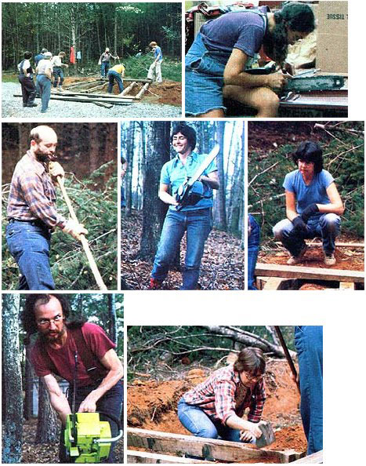

A bunch of Georgia folk have banded together to help each other out, because they have one remarkable quality in common. They're all
... Darned if there's not a lot that "back to the landers" have to learn about country living. What with discovering how to buy land, make butter, sex new chicks, put up food, string green beans, worm livestock, install a woodstove, handle a lambing, repair a chain saw, build a cold frame, keep a dairy goat, wire an electric fence, inspect a beehive, set up a home business, et cetera, et cetera . . . it's no wonder that many urbanites-folks who do yearn to move to the country-feel intimidated by the demands of life on a rural homestead. Some such good people even fear their dream of country living may, because of the seemingly overwhelming number of skills to acquire, have to remain just a dream!
It so happens, though, that one particular "country-eyed cityite--an Atlanta, Georgia businesswoman named Catherine Harkins came up with the following three unusual ideas to help herself and others get back to the land: [1] that urban folks would have a better chance of making a successful transition to rural living if they could pool their enthusiasms, fears, skills, and plans, [2] that somebody ought to organize such a help-each-other group, [3] that Catherine Harkins could be that "somebody".
Having made up her mind, the Atlantan located a sponsor group (Human Development Associates, Inc.) ... worked out most of the preliminary funding, dues, and planning details ... placed an ad in MOTHER's "Positions 8 Situations" column (for Georgia folks who'd want to join a ruraloriented group offering "inspiration, contacts, discount buying, and practical information") . . . and-on December 4, 1978 ran the first meeting of a new organization called Country Bound.
Today, just a year and a half later, the group's initial assemblage of 40 strangers has expanded into a growing network of almost 200 friends. And Country Bound has already made a difference in several folks' lives. Almost all its members will, when questioned, freely express their gratitude for the chance to find-and learn with-a group of people who share their ideas and goals. In addition, several satisfied citizens actually have moved to the country since joining the organization . . . and confess that they "would have gone on for years only thinking about leaving the city if not for Country Bound".
Country Bound's strong start is partly due to the fact that the organization offers people a chance to learn and to do! True, the in-town evening meetings, by necessity, focus on lectures and discussions (with titles such as "Earth-Sheltered Housing", "The Secret of Organic Gardening", and "How Not to Make a Fool of Yourself With Country Folks").
However, the one- and two-day workshops offer the chance to practice-as well as talk about-rural skills. On such occasions, members will drive out to a country homestead, listen to an instructional chat from their rural host, and then roll up their shirt sleeves and actually milk a dairy goat . . . work a beehive . . . build a horse fence . . . or-in the spirit of the oldtime barn raising-help their host construct a small auto bridge or outbuilding.
Should an outside observer attend such a get-together, he or she might at first be struck by how very unskilled some of the participants are. For instance, a member who milks a goat for the first time may excitedly exclaim, "it works!" . . . or a novice woodcutter might ask an instructor, "Why do you grab that thing after you start the chain saw?", when that thing is the machine's fuel trigger.
But helping folks deal with a lack of expertise is, of course, one of the main pur poses of Country Bound! And perhaps the organization's best-and most remarkable -feature is the willingness with which its members have come to tackle completely new learning situations: Women who've never chopped a piece of wood in their lives will, for instance, step right out in front of a group, grab an axe, and hack away at a log until-eureka!-they've cut all the way through the round. A man who admits "feeling awkward with the idea of my being able to construct a bridge that would hold a 3,000-pound truck" will nevertheless "sally forth with the best of the hammer swingers, axe bearers, and shovel scoopers to meet the challenge". Just about everyone is able to honestly admit his or her inexperience . . . while jumping into new activities with both feet!
Catherine Harkins-who likes to think her role as Country Bound's leader will last only until the organization is mature enough to govern itself-is justifiably proud of the openness of the group's members ... and admits that their positive attitudes didn't develop overnight. "At first," she recollects, "people would come to our monthly meetings, silently grab a seat, and stare at the blank space where the evening's speaker was going to sit. Now, though, there's so much talking and planning going on among the members themselves that the `before' and `after' parts of a meeting are probably more important than the formal program!"
And such intersharing has become a second major purpose of Country Bound. As Ms. Harkins puts it, "We're beginning to, go from the passive, what-can-I-get-fromothers stage to the purposeful action of . the what-can-we-all-do-together stage." Planned communities of persons who want to share land and resources (or just eventually become "country neighbors") are springing up quickly among the group's membership. In addition, Country Bound is trying to serve as a communications nexus for rural producer co-ops that market such goods as organic produce, firewood, and handicrafts.
Such expanded efforts illustrate ways that the group can serve the needs of ruralas well as urban-people. In fact, Country Bound tries to provide either information or services of value to anyone with an interest in increased self-sufficiency . . . even those folks who intend to always live in a city. And on top of all that, the Georgia coalition is now beginning to recruit people in other areas . . . men and women who will become directors of their own chapters and help form a national organization!
A full representation of all the different aspects of Country Bound could easily be compared to the old-limey friendship quilts that were made when a community of rural women would gather up scraps of fabric and, working together, stitch a diverse and uniquely patterned bedcover.
The various blocks of such a "Country Bound Quilt" might include scenes showing an expert sawyer's eyes bugging out as he dramatizes the dangers of chain saw kickback . . . a member shedding her neck brace at a weekend workshop when she finds that the kind of support she really needs is available in the form of the care of her fellow attendees . . . and a savvy country lady telling an Atlanta business accountant about the time she swapped fixing the brakes on a fellow's truck for that man's labor in building her outhouse.
But no matter what specific moments were represented, all the sections of the Country Bound Quilt would be tightly sewn together .. . by the bonds of friendship among people working to make their back to the-land dreams come true.
EDITOR'S NOTE: If you'd like to learn more about the Atlanta area Country Boundor how you might be able to start a chapter where you live-write Catherine Harkins, Country Bound, P.O. Box 32034, Decatur, Georgia 30032. Please include a dollar or two with any requests for information to help compensate those folks for their time and expenses.
|
 CLOCKWISE FROM TOP LEFT: Country Bound members built an auto ridge for their rural host during one weekend workshop .... A young woman, with satisfaction after cutting her first log with a chain saw .... Catherine Harkins, the group's founder, takes.' short breather .... A member tamps dirtand a bridge beam .... A dramatizion of the danger of kickback .... C.B.'ers"" acquire experience clearing underbrush...... and sharpening chain. |
|
|